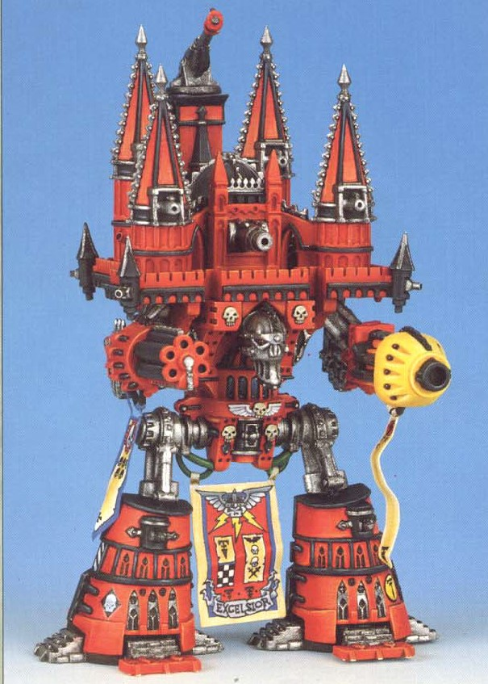

Hobby Tips
Painting your Warhammer 40k models is one of the most rewarding aspects of the hobby. Whether you're a beginner or a seasoned painter, here are a few tips to help bring your models to life:
- Priming: Always prime your models before painting to ensure the paint adheres smoothly.
- Base Coating: Start with a base coat to lay down the foundation colors. Use thin layers to avoid obscuring details.
- Drybrushing: This technique allows you to highlight raised edges of your model, giving it a more dynamic look.
- Washing: Use washes to bring out the shadows and depth in your model, giving it a more realistic appearance.
Featured Model: The Imperator Titan
The Imperator Titan is one of the most awe-inspiring war machines in the Imperium’s arsenal. Standing over 40 meters tall, it is armed with city-destroying weapons like the Plasma Annihilator and the Hellstorm Cannon. A centerpiece of any collection, it towers over even the largest battlefield.
Learn More about the Imperator Titan